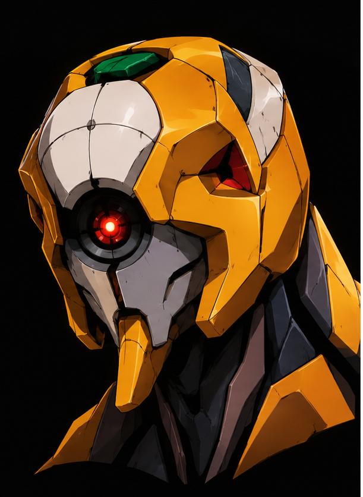
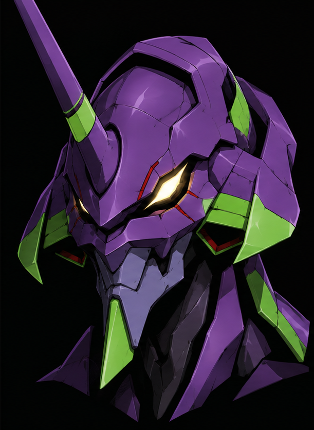
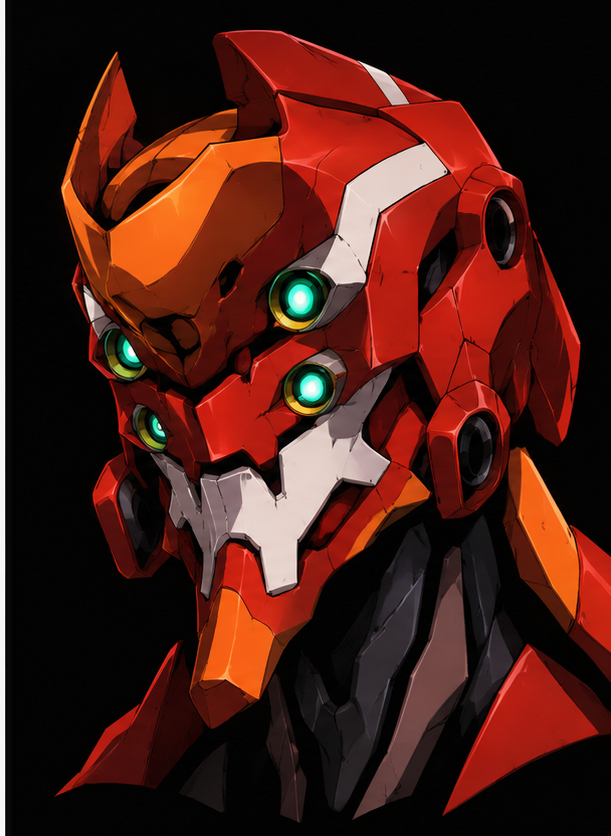
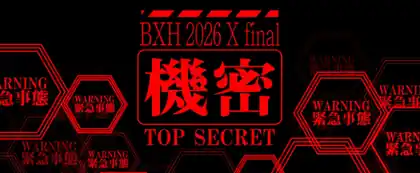

登入入口
登入後頂部
庫洛魔法使
曉組織
獵人Hunter
三幻神
極限指令
暗耀金
獨立設計預覽｜不連線帳號或賽事資料
BXH ARENA
選擇身分，進入
BXH ARENA

管理員
小傑
佩恩
小櫻
ADMINISTRATOR
賽事建立、選手報到、對戰編排與賽事管理
進入 →

玩家
奇犽
宇智波鼬
小狼
PLAYER
查看個人賽事、天梯排名與 BXH 生涯戰績
登入後查看天梯排名與生涯戰績
進入 →

遊客
酷拉皮卡
干柿鬼鮫
知世
GUEST
免登入查看公開賽況、即時對戰與最終排名
進入 →
掃描賽事 QR
會員抽獎
↻ 刷新版本
BXH ARENA · TOURNAMENT MANAGEMENT SYSTEM
VERSION 庫洛魔法使 設計預覽
BXH ARENA
庫洛魔法使

黑爸
主頁
賽事大廳
天梯
我的賽程
庫洛魔法使
庫洛牌封印與星光魔法陣
返回登入入口